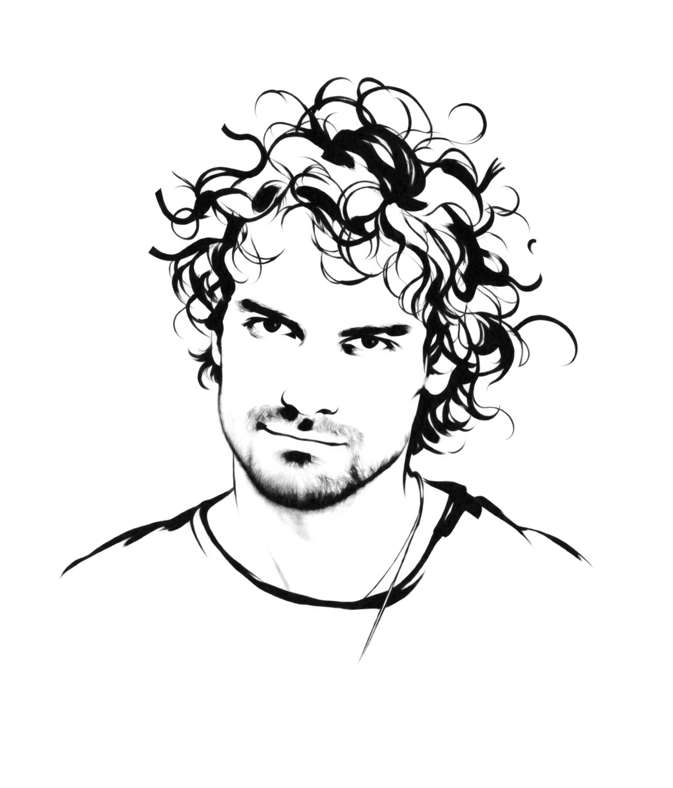

ДЛЯ ЧЕГО ?
Всегда интересно собирать людей, с которыми можно всерьёз поговорить о том, что происходит в
нашей жизни: о мышлении и культуре, о технологиях и новациях, о настоящем и будущем человека.
Не просто обмениваться мнениями, а вместе разбираться, спорить и открывать неожиданные связи.
Ведь настоящее мышление всегда диалогично.
Как говорил Михаил Бахтин: "У человека нет внутренней суверенной территории, он весь и всегда на
границе, смотря на себя, он смотрит в глаза другого или глазами другого."
Поэтому так важно разговаривать и смотреть в правильные живые глаза.
ДЛЯ КОГО ?
Клуб открыт для людей с самыми разными интересами и опытом: важно одно — любопытство,
готовность думать самостоятельно и делиться собственными наблюдениями.
ПРОСТРАНСТВО КЛУБА:
Пространство клуба
Адрес: Екатеринбург, ул. Азина 22/2, ЖК «Мельница».
Расположение: Отдельный вход в двухэтажное помещение
с обратной стороны центрального входа в ЖК, большая стеклянная дверь.
Пройти можно как с ул. Свердлова, так и с ул. Азина.
Контакты
Почта клуба: club@gardari.art
Наши ресурсы
- Арт галерея
- gallery.gardari.art
- Блог Гардари
- blog.gardari.art
- Концепт бюро
- kb.gardari.art
- Платформа инструментов
- platforma.gardari.art
- Дизайн студия
- Проект Homo cogitans
- x0.gardari.art

Я занимаюсь теорией мышления, культурной антропологией,
семиотикой и методологией проектной деятельности; а также создаю
живописные работы, пишу книги и эссе, читаю лекции, разрабатываю
концепции и проекты.
На первый взгляд, занятия довольно разные. Но меня всегда
интересовало то, что происходит на их пересечении: между мифологией
и наукой, историей и современностью, личным и глобальным.
Иногда мысль требует образа, иногда образ приводит к исследованию,
а иногда всё это превращается в реальный проект или инструмент.
Так что я стараюсь не просто размышлять о происходящих переменах,
но и участвовать в них — создавать новые способы мыслить, творить и
воплощать задуманное.